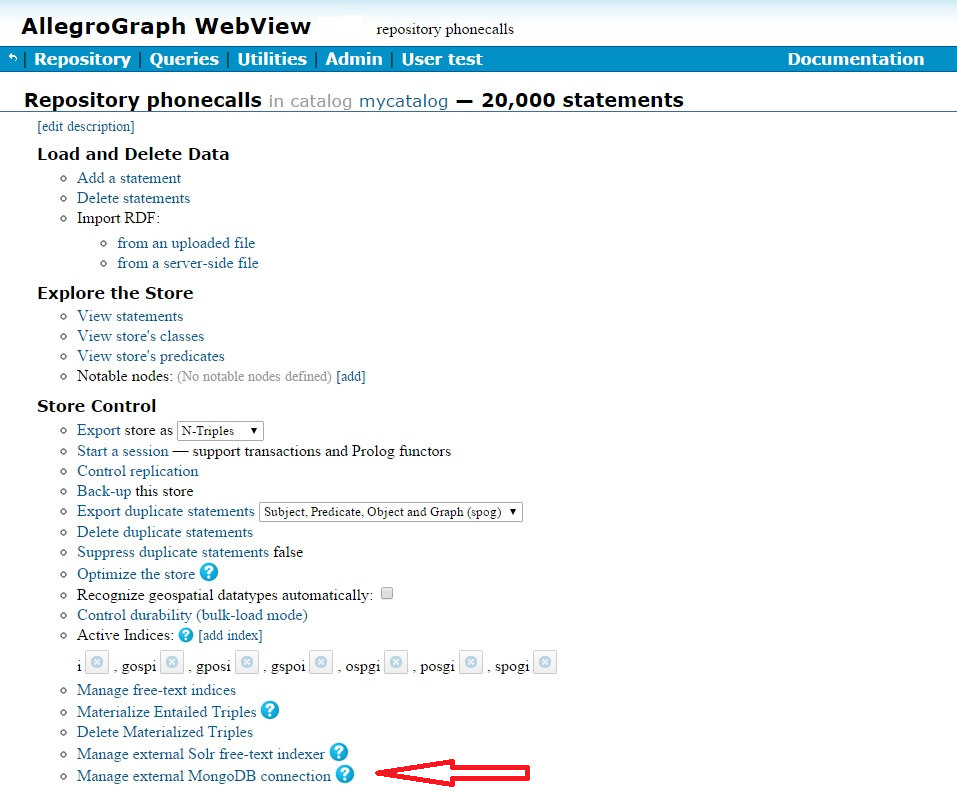

Introduction
AllegroGraph has implemented extensions allowing users to query MongoDB databases using SPARQL and to execute heterogeneous joins, even though MongoDB, a NoSQL JSON document store, does not natively support joins, SPARQL or RDF-enabled linked data.
In this document, we describe how to configure AllegroGraph and MongoDB to work together.
Interfacing with MongoDB
The steps for using MongoDB with AllegroGraph are:
- Installing MongoDB
- Synchronizing MongoDB data with AllegroGraph data
- Configuring AllegroGraph with MongoDB connection settings
Please note that populating and maintaining the MongoDB database is separate from adding or deleting triples from the AllegroGraph triple-store. Adding or deleting data from one does not automatically synchronize with the other.
Installing MongoDB
MongoDB is not a Franz Inc. product. Setting up and maintaining a MongoDB database is a separate task and must be accomplished outside of AllegroGraph. See the MongoDB website for details.
In the rest of this document, we assume you have the MongoDB server installed and running on a computer you can access.
Synchronizing MongoDB data with AllegroGraph
You must link AllegroGraph data and MongoDB data referring to the same object. Use the MongoDB _id field as the linking variable between the two databases. That value is typically an ObjectId but that is not a requirement. This means that you need to add a triple like (for example)
ex:subject1001 <http://www.franz.com/hasMongoId> 4561 where 4561 is the unique MongoDB id for the document associated with ex:subject1001 in the triple-store. The datatype of that triple's object is significant and will depend on the datatype you use for the ids in you MongoDB documents. Use the following RDF datatypes for each id type in MongoDB:
- ObjectId - use a plain literal whose value is the hexadecimal string representation of the ObjectId,
- Integer - use a datatype of
xsd:Long - Numeric (non-integer) - use a datatype of
xsd:Double - Anything else - use a plain literal
Configuring AllegroGraph with MongoDB connection settings
MongoDB connection settings
The server where MongoDB is running
The port on which MongoDB is listening
The name of the database you are using
The name of the MongoDB collection you are using
(Optional unless you are using authentication) the username and password that will let you connect to the database
These parameters can be set using AGWebView, the HTTP interface, or the Lisp interface, as we describe below in this document.
The AGWebView interface
AGWebView is the browser-based interface to AllegroGraph. To use it with MongoDB, go to the Repository Overview page and click on the link under Store Control which says Manage external MongoDB connection (indicated by a red arrow):

On the linked page, you can set the necessary MongoDB parameters.
The HTTP interface
The AllegroGraph HTTP Protocol supports GET mongoParameters and POST mongoParameters. See The HTTP Protocol.
The Lisp interface
Use these Lisp functions to get and set these parameters:
Returns the current Mongo connection parameters in a property list.
Currently it contains these items:
:server- The server name where MongoDB is running:port- The port to use to communicate with MongoDB:database-name- The name of the database to use when querying MongoDB:collection-name- The name of the collection to use when querying MongoDB:user- Used to authenticate to the Mongo DB server
Note, the :password from set-mongo-parameters is not returned.
Set MongoDB connection parameters.
You can set any combination of:
:server:port:database-name:collection-name- required to be non-empty:user- optional:password- optional
MongoDB and SPARQL 1.1
Once you have a MongoDB database set up and running and have added the linking triples to its associated AllegroGraph triple-store, you can query it using the SPARQL 1.1 query engine.
To query MongoDB with SPARQL, use the following magic predicate (note /4.7/ rather than the current release number -- the initial release for the interface is used and not updated so code does not have to be changed when you upgrade to a later release):
<http://franz.com/ns/allegrograph/4.7/mongo/find> As MongoDB is a JSON-style document store, it is also queried using a JSON-style notation. Given the following data in MongoDB:
{ _id: "1",
Name: "Finn",
Occupation: "Great Hero",
Alignment: "Good" }
{ _id: "2",
Name: "Jake",
Occupation: "Best Friend",
Alignment: "Good" }
{ _id: "3",
Name: "Ice King",
Occupation: "King",
Alignment: "Bad" }
{ _id: "4",
Name: "Gunter",
Occupation: "Servant",
Alignment: "Bad" } and the following linking triples in AllegroGraph 1 :
@prefix f: <http://www.franz.com/> .
@prefix id: <http://www.example.com/id#> .
@prefix xsd: <http://www.w3.org/2001/XMLSchema#> .
id:subject1 f:hasMongoId "1" ;
f:likes id:subject3 ;
f:likes id:subject2 .
id:subject2 f:hasMongoId "2" .
id:subject3 f:hasMongoId "3" .
id:subject4 f:hasMongoId "4" . A query which finds people with Good Alignment who like people with Bad Alignment would look like:
prefix mongo: <http://franz.com/ns/allegrograph/4.7/mongo/>
prefix f: <http://www.franz.com/>
select ?good ?bad {
?good mongo:find '{ Alignment: "Good" }' .
?bad mongo:find '{ Alignment: Bad" }' .
?good f:likes ?bad .
} which returns
?good ?bad
==================
subject1 subject3
Footnotes
-
Note that both the
ObjectIDs in MongoDB and the objects of the linking triples use plain literals. ↩